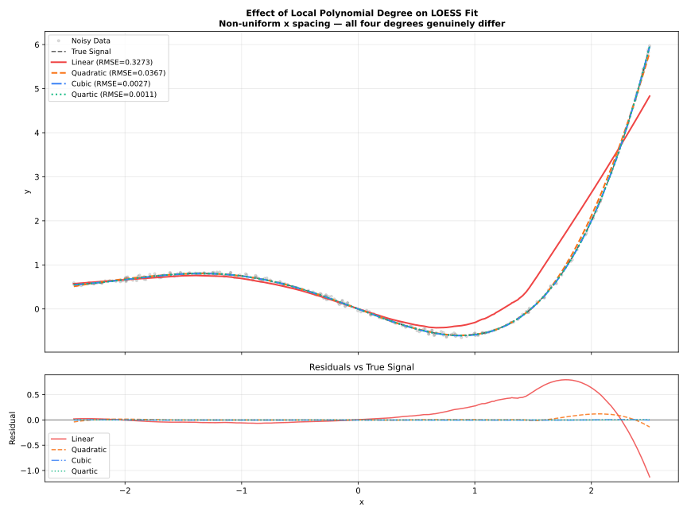
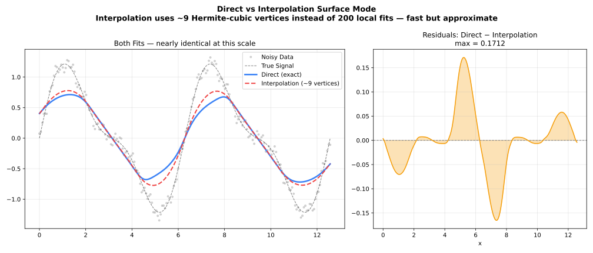
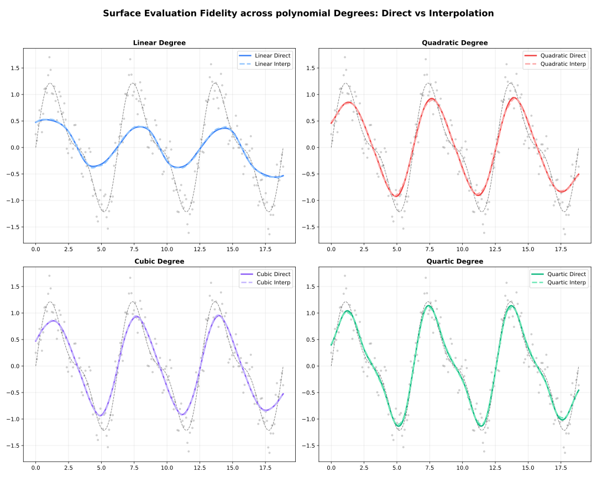

<!– markdownlint-disable MD024 MD033 MD046 –>
Polynomial Degree
Degree of the local polynomial fitted at each point.
Overview
At each target point, LOESS fits a polynomial to the neighbouring data using weighted least squares. The degree parameter controls the order of that polynomial.

| Degree | Local Fit | Captures | Risk |
|---|---|---|---|
0 | Constant | Level only | Over-smooth, biased at edges |
1 | Linear | Trend (default) | Rarely overfits |
2 | Quadratic | Curvature | Overfits with small fraction |
3 | Cubic | Inflections | Requires larger fraction |
4 | Quartic | Fine structure | High variance, rarely needed |
Degree 0 — Local Constant
\[\hat{y}(x_0) = \arg\min_a \sum_i w_i(x_0)\,(y_i - a)^2\]
The fit at each point is simply a weighted mean. Produces very smooth results but ignores local slope, introducing bias wherever the true function changes.
Use when: Maximum smoothness is more important than accuracy; computationally cheapest option.
using FastLOESS
using Random, Statistics
rng = MersenneTwister(42)
x = collect(range(0, 2π, length=100))
y = sin.(x) .+ randn(rng, 100) .* 0.3
model = Loess(; degree="constant", fraction=0.5)
result = fit(model, x, y)Degree 1 — Local Linear (Default)
\[\hat{y}(x_0) = \arg\min_{a,b} \sum_i w_i(x_0)\,(y_i - a - b x_i)^2\]
Fits a weighted line through the neighbourhood. Removes first-order bias and handles boundary regions correctly. The right choice for the vast majority of applications.
Use when: Default; monotone or gently curved data; boundary accuracy matters.
using FastLOESS
using Random, Statistics
rng = MersenneTwister(42)
x = collect(range(0, 2π, length=100))
y = sin.(x) .+ randn(rng, 100) .* 0.3
model = Loess(; degree="linear", fraction=0.5)
result = fit(model, x, y)Degree 2 — Local Quadratic
\[\hat{y}(x_0) = \arg\min_{a,b,c} \sum_i w_i(x_0)\,(y_i - a - b x_i - c x_i^2)^2\]
Fits a weighted parabola through the neighbourhood. Removes second-order bias and captures local curvature more faithfully, but requires more data per neighbourhood — pair with a larger fraction (≥ 0.4) to avoid overfitting.
Use when: Data with pronounced peaks, valleys, or curvature; fraction ≥ 0.4.
using FastLOESS
using Random, Statistics
rng = MersenneTwister(42)
x = collect(range(0, 2π, length=100))
y = sin.(x) .+ randn(rng, 100) .* 0.3
model = Loess(; degree="quadratic", fraction=0.5)
result = fit(model, x, y)Degree 3 — Local Cubic
\[\hat{y}(x_0) = \arg\min_{a,b,c,d} \sum_i w_i(x_0)\,(y_i - a - b x_i - c x_i^2 - d x_i^3)^2\]
Fits a weighted cubic polynomial. Captures inflection points and S-shaped local behaviour. Requires a substantially larger neighbourhood than degree 2 — use fraction ≥ 0.5 and verify visually for overfitting.
Use when: Data has clear S-shaped curves or multiple inflection points; fraction ≥ 0.5.
using FastLOESS
using Random, Statistics
rng = MersenneTwister(42)
x = collect(range(0, 2π, length=100))
y = sin.(x) .+ randn(rng, 100) .* 0.3
model = Loess(; degree="cubic", fraction=0.6)
result = fit(model, x, y)Degree 4 — Local Quartic
\[\hat{y}(x_0) = \arg\min_{a,...,e} \sum_i w_i(x_0)\,(y_i - a - b x_i - \cdots - e x_i^4)^2\]
Fits a weighted quartic polynomial. Rarely needed in practice; only useful for capturing highly oscillatory local structure. Very prone to overfitting — require fraction ≥ 0.6 and cross-validate.
Use when: Fine oscillatory structure is physically meaningful and the dataset is large; always cross-validate.
using FastLOESS
using Random, Statistics
rng = MersenneTwister(42)
x = collect(range(0, 2π, length=100))
y = sin.(x) .+ randn(rng, 100) .* 0.3
model = Loess(; degree="quartic", fraction=0.7)
result = fit(model, x, y)Choosing the Right Degree
| Situation | Recommended Degree |
|---|---|
| Monotone trend, general purpose | 1 (default) |
| Maximum smoothness, speed | 0 |
| Clear peaks / valleys / inflections | 2 (with fraction ≥ 0.4) |
| S-shaped curves, multiple inflections | 3 (with fraction ≥ 0.5) |
| Fine oscillatory structure (rare) | 4 (with fraction ≥ 0.6, cross-validate) |
| Boundary accuracy is critical | 1 or 2 (not 0) |
| Very small dataset (n < 50) | 1 |
Higher Degree Effects

Surface Mode
The surface_mode parameter controls whether LOESS evaluates the local polynomial at every query point or at a sparser grid of vertices with Hermite cubic interpolation in between.
| Mode | Behaviour | Speed | Accuracy |
|---|---|---|---|
"interpolation" (default) | Evaluate at anchor vertices, blend via Hermite cubic | Faster | Slight approximation |
"direct" | Evaluate at every query point | Exact | Full precision |

